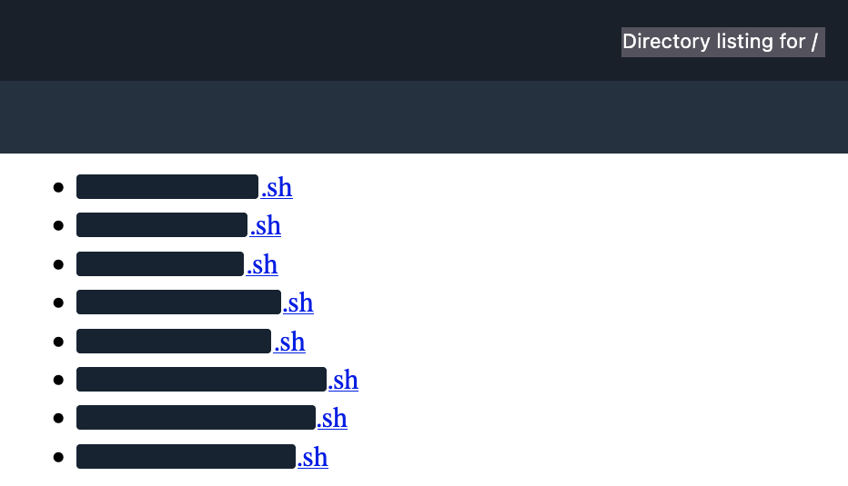
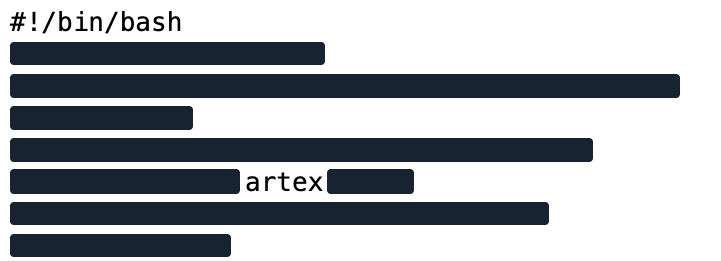
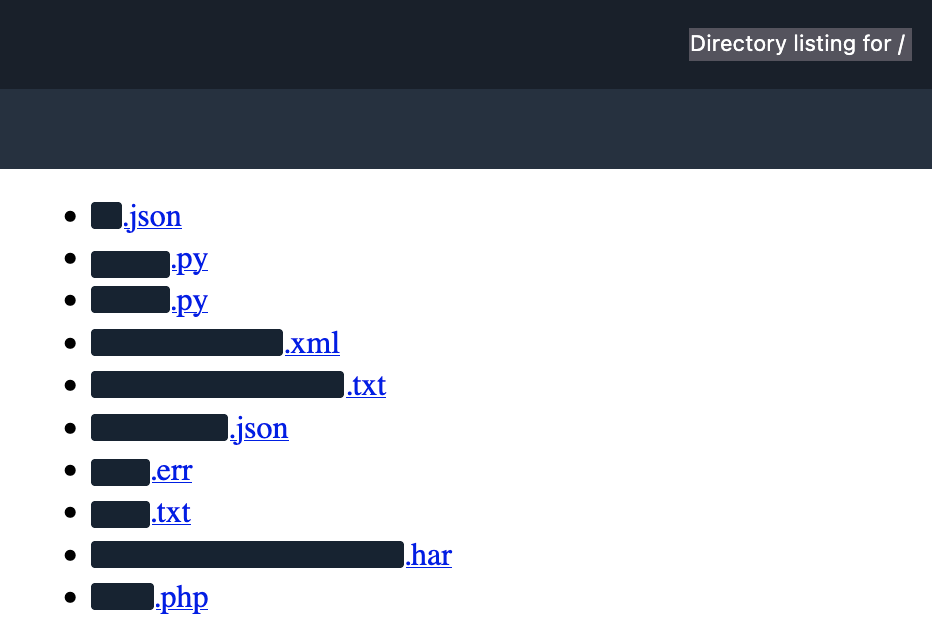
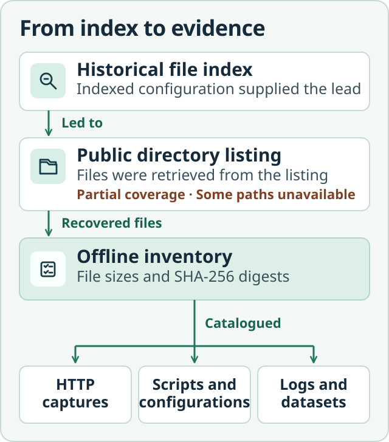
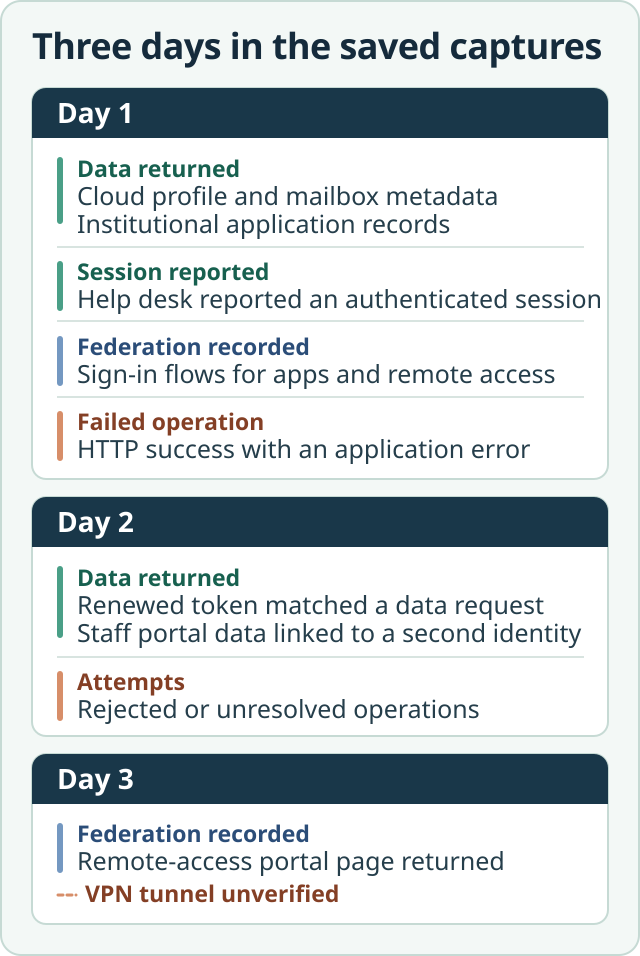
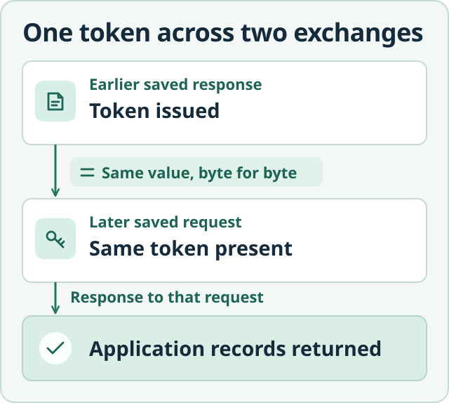

Key findings
An indexed file led us to a public directory containing several thousand files. Among the scripts and task definitions were saved HTTP exchanges involving a university’s applications.
One pair of exchanges stood out. A token issued in one response appeared byte for byte in a later request, and the application returned records. A separate staff portal response could be tied to a second identity. A third service reported an authenticated session whose account could not be linked to either identity.
The recovered startup files and task definitions link ARTeX to the operation’s preparation and targeting. Application activity is documented in the saved HTTP captures. The execution link between an individual ARTeX task and a captured request remains unverified.
Institutional identifiers and exact dates are withheld. The public exhibits use redacted screenshots, aliases and redrawn figures.
Discovery and collection
A historical file record in Hunt.io led me to the host, where I found the public directory listing. We used urlscan.io records to assess other candidates. The listing exposed configuration files, tasking material, structured datasets, logs and saved traffic. The directory server’s operator remained unverified.
We used a custom Python collector built with Requests to retrieve listed files through Tor Browser’s SOCKS proxy. Across successive passes, the collector recorded retrieval outcomes and computed SHA-256 digests for the local copies. Size and hash verification checked the integrity of the copies used for review. Coverage remained partial. A separate attempt limited to recently modified files timed out before the root listing could be read.
Screenshots from the open directory
These cropped screenshots document what was visible in the browser during collection. Opaque masks cover addresses, filenames and sensitive script contents.

.sh files appear as individual links.


E-01 · Acquisition ledger
| Recorded result | Inventory consequence |
|---|---|
| Listed file retrieved and locally hashed | Included in the verified collection. |
Listed file returned 404 | Recorded as unavailable. |
| Candidate path returned a page in place of a directory listing | File enumeration stopped at that path. |
The ARTeX link
The startup and tasking artifacts show that ARTeX was prepared for use. The directory held files that referenced the framework, alongside task definitions that explicitly named one university. Some recovered files matched older indexed copies by SHA-256. Together, the artifacts place ARTeX in the toolkit and identify the institution as an intended target in the tasking material.
We inventoried the files with Python and inspected scripts, executable structure and packaged components offline. The archive review used tarfile to examine member listings and contents. We compared packaged components with recovered source code to verify what the files could do.
Reconstructing the captures
The recovered corpus contained HAR files and Burp-format XML exports. We wrote offline Python parsers to extract request and response pairs, decode stored content as needed and normalize times for a single timeline. Where possible, we compared capture times against HTTP Date headers. We kept undated material outside the timeline.
Some exchanges appeared in more than one export. In one overlap, two XML files recorded the same capture timestamp and matching SHA-256 digests for the full request and response. We treated these as two views of one exchange. Other similarities provided correlation leads with weaker support. The recovered Burp-format files were the inputs to our offline analysis. The proxy operator and capture workstation remain unknown.
E-02 · One exchange in two exports
| Comparison field | XML export A | XML export B |
|---|---|---|
| Capture timestamp | T1 | T1 |
| Request digest | REQ-A | REQ-A |
| Response digest | RES-A | RES-A |
Equal labels represent equal values in the retained captures. The timestamps and digests in this exhibit are aliases.
Three days of activity
The first saved request establishes the beginning of the visible record. How the session material was originally obtained remains unknown.

Day 1
-
Application response
Cloud profile, mailbox metadata and institutional records
A profile identifier matched the identity declared in the token sent with the request. Other responses returned message metadata and institutional records. Separately, the help desk reported an authenticated state in its response.
-
Authentication
Federation across services
Saved identity-provider and relying-application exchanges showed SAML federation, including toward a remote-access service. The application response determined what could be established for each service.
-
Attempt
An application returned an error during a change request
The response carried an HTTP success code and an application exception. The response contained no usable result for the requested operation.
Day 2
-
Application response
Renewed access token used in a recorded API request
A token issued during session renewal matched the token in a later request. The API returned records. Another saved exchange linked an issued mail access token to a response with conversation records.
-
Application response
Staff portal data tied to a second identity
The staff portal returned data for an identity distinct from the one in the cloud mail captures. Help desk responses declaring an authenticated state reappeared that day.
-
Attempt
Rejected API call and an unresolved password reset
A separate API request returned
401. In another flow, the identity provider recorded a completed MFA step. The final reset response had empty result fields, leaving the password change unverified.
Day 3
-
Authentication
Remote-access federation recurred
The exchanges showed federation followed by a remote-access portal page. A VPN tunnel and access to internal systems remained unverified.
E-03 · The token match

Reading HTTP outcomes
The response body made the difference in several cases. Two responses carrying 200 OK supported different conclusions. One returned application data and the other contained a functional exception. A remote-access page documented a point reached in federation. Tunnel establishment would require VPN session telemetry.
E-04 · Status and application outcome
| Recorded exchange | Supported conclusion |
|---|---|
200 and an application body containing records | The application returned data in the captured session. |
200 and an application exception with an empty result | The application returned an error. Completion of the change remains unverified. |
401 from an API | That request was rejected. |
| Federated redirect followed by a remote-access portal page | The flow reached the portal. A live tunnel remains unverified. |
Tool activity and impact
The directory contained proxy exports, reconnaissance output, automation logs and tool configuration files. The execution hosts and the identities of the people who ran the tools remain unverified.
E-05 · Tool artifacts and what they establish
| Tool and recovered artifact | What the evidence supports |
|---|---|
Burp Suite. XML exports with burpVersion and exportTime attributes, plus scripts that parse the exports. | The attributes identify the export format. Who produced the captures, where the proxy ran and whether it was installed on university systems remain unverified. |
httpx. Saved HTTP fingerprinting output and a reference in a launcher script. | The archived output is consistent with HTTP probing and service fingerprinting. |
| Nuclei. Saved results and a reference in a launcher script. | The results support template-based scanning. Most entries were informational. Exploitation remains unverified. |
| Playwright and Chromium. Browser automation code, run logs and saved browser state. | The artifacts document automation attempts that reached authentication. One recorded run stopped during authentication, with successful login unverified. |
| ARTeX. Startup and configuration files, plus task definitions naming the institution. | The files document tool preparation and explicit targeting. The link between an executed ARTeX task and captured HTTP activity remains unresolved. |
| Prepared webshells. Source code and packaged components recovered from the exposed directory. | Static review confirmed that the code could execute commands on a server. Deployment and use remain unverified. |
For scope, we compared institutional datasets within their own identifier systems. Some records overlapped. Other datasets lacked a reliable join key for linking their entries to the same people. The supplied corpus supports one explicit institutional target and two identities correlated with returned data. The number of people or accounts affected remains unknown.
The directory exposure itself is documented. It made institutional data and authentication material publicly accessible. The available captures leave initial access, session authorization, control of the MFA step, persistence, direct database access and transfer to any additional destination unresolved.
Detection leads
We found prepared webshells in the exposed directory. The recovered files and HTTP captures contained no evidence that the webshells were deployed or used.
Our offline YARA scan of the recovered files matched two generic PHP webshell rules from Signature-Base.
EXT_WEBSHELL_PHP_GenericWEBSHELL_PHP_Generic_Eval
To investigate a similar match, compare the file against the approved deployment baseline and correlate web requests with process activity on the server. For suspicious sessions, correlate token issuance in identity-provider logs with the corresponding application audit records. Signature-Base webshell rules.
Evidence index
- E-01 Acquisition ledger and redacted screenshots
- E-02 Duplicate capture comparison
- E-03 Recorded token issuance and use
- E-04 Application and authentication outcomes
- E-05 Tool artifacts and execution evidence
The strongest conclusion comes from matching the issued token to the subsequent saved request and reading the response body. Establishing the origin, authorization and impact of the sessions would require identity, application and network telemetry from the institution.